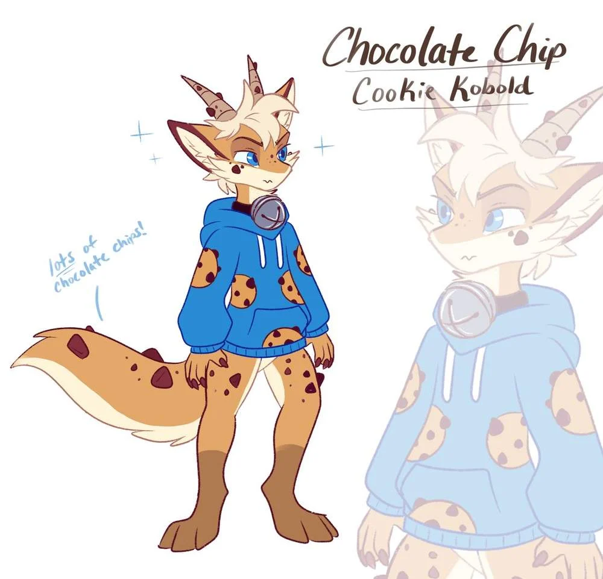

Opiekun · „Big Bro”
Vince
Na początku Chip czekał na mechanizm — koszt ukryty w pomocy. Vince był cierpliwy, ale nie bierny: przygotowywał warunki, a wnioski zostawiał Chipowi. Przy nim Chip czasem zapomina przytrzymać dzwonek.

Cancrosa Files · Ref // Cookie Kobold · 002
„Chip” · futrzasty ciasteczkowy kobold · on/jego
Silence is a choice — and so is letting it ring.Cisza to wybór — i to, żeby pozwolić mu zadzwonić, też.
Czujny, nieufny i cieplejszy, niż wygląda. Podopieczny Vince'a — na papierze opiekun prawny, w praktyce „Big Bro”.
Część pierwsza
Ciepłe, jasnobrązowe futro jak surowe ciasto, z ciemniejszymi „skarpetkami” poniżej stawów — ciepły odpowiednik czarnych łap Vince'a. Najważniejszy znak: lekko wypukłe kropki jak kawałki czekolady na rękach, nogach, ogonie, tułowiu i pyszczku — ale nie na dłoniach, stopach ani uszach.
Część druga
Na wierzchu
Domyślnie ostrożny i lekko zaczepny. Zaczyna od sceptycyzmu, ciepło przyjmuje z podejrzliwością i niewiele zdradza. Kwaśna mina to nawyk — wyrzeźbiony latami, w których otwartość kosztowała więcej, niż dawała.
Pod spodem
Uparta inteligencja i spostrzegawczość większa, niż pokazuje. Zauważa, pamięta, rozgryzie twoje odruchy, zanim ty rozgryziesz jego. Nie pyta wprost, nie dziękuje słowami, gdy może czynem, i nie przyzna, że coś lubi — po prostu do tego wraca.
Rysa
Głęboko zakorzeniona trudność w uwierzeniu, że dobre rzeczy przetrwają. Nie dramatyczny cynizm — cichsza, praktyczna wersja: czeka na haczyk. Mylił się co do haczyka częściej, niż się spodziewał.
Skąd te kropki
Jako dziecko z sierocińca podkradał ciasteczka życzliwej starszej pani. Jej zaczarowany dzwonek miał go łagodnie odstraszać, a stał się ich cichą grą. Gdy dzwonek pękł, magia zaczęła powoli wyciekać — od siódmego roku życia pojawiały się kropki. Zostawiła mu znaki, dzwonek i pamięć o kimś, kto chciał dla niego wyłącznie dobrze.
Zwrot
W wieku 15 lat uciekł i przez rok żył poza systemem, wśród koboldów, które bardziej wykorzystywały, niż wspierały. W wieku 16 lat wszedł na salę sądową, spodziewając się kolejnej wersji tej samej historii — a wyszedł z czymś, czego nie było na jego mapie możliwych zakończeń.
Część trzecia
Opiekun · „Big Bro”
Na początku Chip czekał na mechanizm — koszt ukryty w pomocy. Vince był cierpliwy, ale nie bierny: przygotowywał warunki, a wnioski zostawiał Chipowi. Przy nim Chip czasem zapomina przytrzymać dzwonek.
Partner Vince'a
Oceniony, zatwierdzony, wcielony do tych, których Chip chroni. Dostał od niego trzy zasady — serce, głowa, ciało — wypowiedziane jak groźba, bo to gramatyka, której Chip ufa.
Bliski przyjaciel
Chip znalazł go pod mostem i trzymał dla siebie tak długo, jak się dało. Ich rytm jest łagodny i niespieszny. Powracający moment: puszysta końcówka ogona Toro, która zamyka Chipowi pyszczek w pół zdania.
Ekipa
Otto (niedźwiedź), Reem (gazela), Sorrel (lisica) i Odon (łoś) — jego własny krąg, poza domem. Wszyscy znają już Toro.